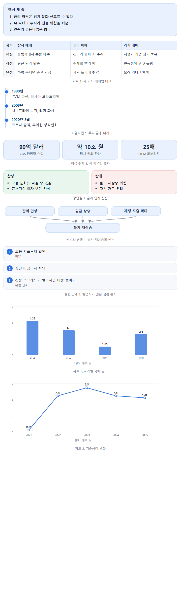

영상 한 편이
보고서 한 권으로 뚝딱
유튜브 주소나 내 영상·음성 파일을 넣으면 자막을 모으고, 내 Claude·ChatGPT 구독으로 요약해서 목차·근거 시각·그림까지 갖춘 HTML·PDF 보고서로 만들어 줘요.
누르면 최신 설치 파일(ReportTtukttak_Setup.exe)이 바로 받아져요 · 관리자 권한 없이 설치 · 앱 안에서 자동 업데이트
GitHub 릴리스 페이지의 "Source code"는 프로그램이 아니에요.
이렇게 써요
주소를 넣고 기다리면 끝이에요. 한도에 걸려도 풀리면 알아서 이어서 해요.
기능
공부·투자 정보 정리에 필요한 것들을 담았어요.
제대로 된 보고서
표지·목차(쪽번호)·핵심 세 줄·장별 요약. 발언자 주장과 AI 시사점을 나눠서 보여 줘요.
근거 시각 링크
모든 주장 옆에 영상 시각 링크. 자막에서 확인 안 된 숫자는 따로 표시해요.
기기별 PDF
A4·태블릿·스마트폰 크기로 같은 내용을 보기 좋게 만들어요.
여러 개 한 번에
주소 여러 줄을 붙여 넣으면 차례로 요약해요. 동시에 1~3개까지.
구간만 요약
12:30~28:00처럼 필요한 부분만 보고서로 만들 수 있어요.
예약·한도 자동 대기
AI 쓰지 않는 시간에 예약하고, 한도에 걸리면 풀릴 때 이어서 해요.
채널 자동 요약
정해 둔 채널에 새 영상이 올라오면 자동으로 요약해요(하루 상한).
텔레그램으로 받기
완성되면 내 텔레그램으로 자동 전송. 결과에서 골라 다시 보내기도 돼요.
받아쓰기
자막이 없는 영상·내 파일도 Whisper로. 자동 자막의 빈 곳만 채우기도 돼요.
장면 캡쳐·영상 저장
화면 속 표·슬라이드를 보고서 그림으로 넣고 영상도 저장(약관 동의 후).
내 스타일·새 버전
자주 쓰는 요청을 스타일로 저장하고, 요청만 바꿔 새 버전을 만들어요.
자막 고치고 다시
잘못 들은 이름·숫자를 바로잡으면 고친 자막으로 다시 써요.
결과 관리
버전 묶어 보기, 본문 검색, 제목 바꾸기, 휴지통 삭제, 여러 개 지우기.
백업·복원
보고서·설정·기록을 파일 하나로 새 PC에 옮겨요. 토큰·로그인 정보는 빼고요.
자동 업데이트
설정에서 [설치] 한 번. 설정과 보고서는 그대로, 유튜브 부품은 따로 자동 갱신.
보고서 정리 그림
글자로 상자를 흉내 내지 않아요. AI는 내용만 정하고 앱이 깔끔하게 그려서, PDF 어떤 크기에서도 깨지지 않아요. 내용에 맞을 때만 들어가요.
- 흐름도
- 비교표
- 타임라인
- 핵심 숫자 카드
- 장단점·찬반
- 원인과 결과 나무
- 실행 단계
- 막대·선 차트
- 핵심 세 줄

설치
3분이면 돼요.
1. 내려받기
위의 [설치 파일 바로 받기]나 이 링크를 눌러 ReportTtukttak_Setup.exe를 받아요. "Source code" 파일은 프로그램이 아니에요.
2. 실행
"Windows의 PC 보호" 창이 뜨면 [추가 정보] → [실행]. 코드 서명이 없어서 처음에만 떠요.
3. 첫 실행 안내
약관 → AI → 저장 폴더 → 형식 → 받아쓰기 → 텔레그램 → 편하게 쓰기 순서로 고르면 끝.
필요한 것
Claude로 요약
Claude Pro/Max 구독 + Claude Code. 명령 창에서 claude 실행 후 /login
ChatGPT로 요약
ChatGPT Plus/Pro 구독 + Codex. 명령 창에서 codex login
Windows 10/11 64비트, Microsoft Edge(기본 설치돼 있음, PDF 만들 때 써요). 둘 중 하나만 있어도 돼요.
자주 묻는 것
돈이 더 드나요?
앱은 무료예요. 이미 쓰는 Claude·ChatGPT 구독 로그인으로만 요약하고, API 키나 추가 크레딧은 쓰지 않아요. 한도에 걸리면 결제 대신 풀릴 때까지 기다렸다 이어서 해요.
예전 버전(0.1.3 이하)을 쓰고 있어요.
앱 안 업데이트가 끝까지 안 될 수 있어요. 최신 설치 파일을 받아 그대로 실행하면 위에 덮어 설치되고, 설정·보고서·기록은 그대로 남아요. 0.1.4부터는 앱 안에서 업데이트돼요.
보고서는 어디에 저장되나요?
기본은 문서\보고서뚝딱 아래 자막·보고서·영상 폴더예요. 설정에서 기본 폴더 하나만 바꾸면 세 폴더가 함께 옮겨져요. AI에는 영상 제목·자막 글·요청만 보내고, 영상 파일과 내 PC의 다른 파일은 보내지 않아요.
앱이 멈추거나 꺼졌어요.
%LOCALAPPDATA%\보고서뚝딱\crash.log 파일을 보내 주세요. 원인을 바로 찾을 수 있어요.
지우려면요?
Windows 설정 → 앱 → 보고서뚝딱 → 제거. 만든 보고서와 설정은 남아요.
영상을 저장해도 되나요?
본인이 권리를 가진 영상이나 개인 학습 범위에서만 쓰세요. 저장한 영상·캡쳐를 다시 올리거나 나눠 주지 마세요. 이 앱은 DRM이나 접근 제한을 우회하지 않아요.